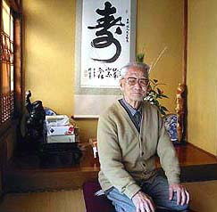

父・上形好人（2005年4月12日 東京都 上形さん投稿）

千葉県在住の上形好人さん。大正元年生まれ、現在93歳。元 三井三池製作所機械工。
僕の父は、まさに三池闘争当時そのまっただ中にいた人間です。皆さんもご存知の労働者 作曲家荒木栄さんと同じ職場である三井三池製作所（三作）で第一組合に残った22名の中の一人です。しかも、僕の父 が最長老と言うことになります。かといって荒木栄さんや他の人たちみたいに立派な思想や文化的な才能を持っていた わけではなく、労働者の本能として、何が大事で大切なのか、誰が本当の味方かを感じ取っていたのでしょう。 三池闘争当時、僕はちょうど小学6年生から中学1年生になる時期でした。決して身体が丈夫とは言えない小柄な父が 剣道の胴着を上着の下につけて覚悟を決め出かけていく姿を見て、ただならぬ思いをもって見送ったものです。今思い 返せばその時がホッパー決戦だったわけですが、これが最後かと云う思いをしての親子のお見送り・・お別れでした。 当時は父と家の中で相撲などすると、やっと父と子の体力関係が逆転して負かすような時期だっただけに、心配で心 配で仕方なかった記憶があります。ただし、精神的な強さは僕の尊敬するところでした。 そんな中で、住まいの近くにあった四山社宅に遊びに行っていたとき、会社が雇った暴力団が久保さんの命を奪う暴 挙を目にしたことがあります。正確に言えば、その現場でなく刺されて殺され運ばれていく所を目にしたことがあり ます。その時、おそらく組合員の奥さん達だったと思いますが新聞記者たちに涙を流しながら抗議していました。 母は、三池労組主婦会の本部役員として全国を廻って活躍していました。当時は会議やオルグ等で出張のためほとん ど家にはいられず留守にしていました。そのため、夕食の用意は小学生の幼い僕が賄っていたのです。 闘争後、組合の敗北・後退により、私が高校2年生の時、三川坑炭塵大爆発が起こり、僕らの周りの学友達の父兄が数 多く亡くなったり、或いは一酸化炭素中毒で長い間想像を絶する苦しみを余儀なくされていました。 そのような中で当時、東京のある有名私立大学の付属高校から修学旅行だといって炭塵爆発事故に関することを調べ たいという高校生グループがやってきたのでした。私は当時生徒会の役員をしていたので、彼らの調査受け入れに応じ たわけですが、その当時私は修学旅行なるものは単に観光旅行だという意識しかなかったものだから、一種の大きなカ ルチャーショックを受けたものでした。そのことが私に地元にいる高校生の一人として何をなすべきかと自己問答させ た結果、炭鉱の歴史や事故の統計資料、組合と会社の力関係などを作成して文化祭で発表しようとしたところ、学校当 局から禁止命令が出て、どうして東京の学生達には良い顔をして受け入れるのに地元の学生がやろうとすると禁止する のかと、かなり激しく学校側に立つ先生達とやりあったものでした。それでも最終的には強行突破で多くの学友の支援 を背にして、一部影ながら応援してくれた先生に元気付けられながら強行公開することにしました。廻りの学友達の多 くは、彼らの父兄が合理化という名によって殺された訳だから・・・。その資料も私自身が幼く拙いながらも、その中 には真実が語られていると自負していましたし、あの爆発事故は起こるべきして起こったものだという結論が導き出さ れていました。即ち、労働組合が強いときは事故が減り、弱くなると事故が増えてきたという事実が統計で示され明確 になっておりました。 第一組合に残った三井三池製作所22名に対する賃金差別は言葉に言い表わせないくらいひどいものでした。そういう ことから私自身大学に上がれるような家計状況にはなかったのですが、私はどうしても事故調査にきた付属高校の学生 達を教育する先生達が居る大学で学びたいという希望が強くなることを抑えられず、進学することにしたのです。たま たま入学試験の成績が良かったのか、育英会の奨学金だけでなく学内の奨学金もいただけることになり、無事４年間、 親に負担をかけずアルバイトをしながら、また多くの学友達に支えられて、楽しく学ぶことができました。 今後、働く人たちが一人一人では弱い存在なのだから、心底から本当に団結して行かないとリストラが普通の感覚で 疑問視さえも出来ないという今よりもっともっとおかしな世の中になることを大変危惧しています。大牟田のかつての 出来事のように。 三池労組が解散式を開くと言うので当初私の両親も含めてぜひ参加しようと思っていたら、間もなく93歳になる父が 4月6日突然倒れて入院騒ぎとなりました。肺炎を併発し高齢でもあるところから意識もうろうとしていた状況で、医者 からも死を覚悟をしておいてくれと告げられ、このままダメかと思いましたが、家族たちの献身的な看病で奇跡的と思 えるほどに回復へ向かっております。父は「退院したらみんなで九州へ行こう」と云えるほどになりました。 そんな父に命ある内に映画『ひだるか』を見せておきたいと・・・。そして、三池闘争などを全く知らない若者達に こそぜひ見て貰いたいと思っています。勿論いろんな人がいていろんな考え方があって良いわけだし、それがきっかけ となって話題になれば問題意識も出てくるだろうと思うからです。そのことが最も大切なことではないでしょうか？
|